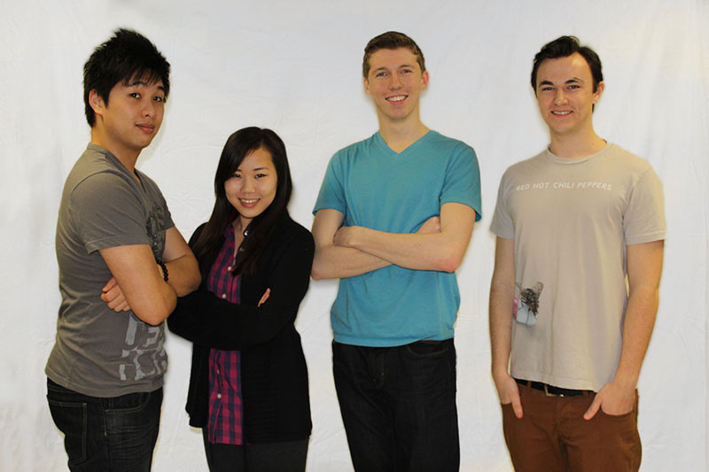

What Were DoingThe final product will be featured as an interactive website specializing and showcasing motion capture content which includes step by step tutorials, helpful tips, photos, videos, and dynamic jQuery that will enhance and elevate the user’s learning experience to the next level. The primary goal is use visually engaging elements such as parallax scrolling to create a timeline of events whereby the user can assimilate information in incremental stages starting from the basics progressing gradually into more complicated matters. Furthermore, the main reason why parallax scrolling is utilized rather than the traditional website layout is because we wanted to create a continuous and flowing experience for the user. This means that the majority of the content will be featured on one single page with multiple sections that will contain specific content related to the motion capture. As a result, this will eliminate the necessity for the user to switch to another page to view additional information which we found to be one of the main problems associated with previous examples of motion capture learning centers. Although the user may have completed their journey and have now mastered the basics of motion capture we will also show them that this is in fact only the beginning of their journey, for they now have the tools to further pursue more in depth studies and undertake more creative challenges with motion capture. At this point we will highlight examples of motion capture that have already been done in films such as Pirates of the Caribbean, Harry Potter, Lord of the Rings, and Tron. |
 |